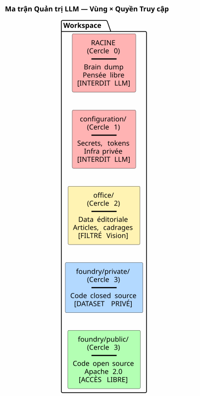
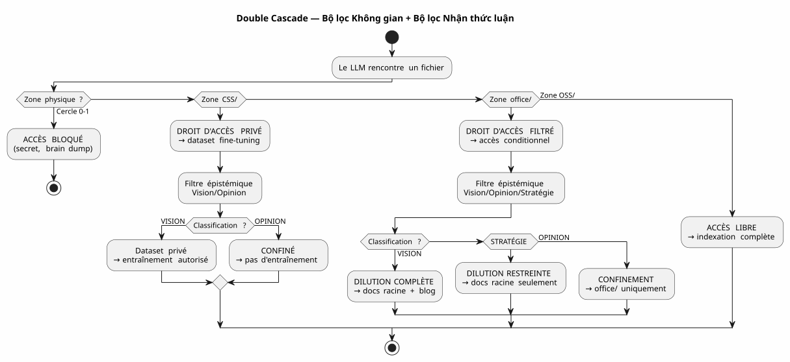
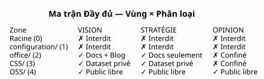

Ma trận Quản trị LLM — Tại sao Bảo mật AI của bạn Bắt đầu từ Cấu trúc Cây
Đăng ngày 04 May 2026
- Vấn đề là: Prompt Engineering là một Lâu đài Cát
- Câu trả lời của tôi: Ma trận 4×4
- Cách LLM Tiêu thụ Ma trận Này
- Triển khai: Các Gradle Task được định kiểu
- Tại sao Đây là một Bản tuyên ngôn, Không chỉ là một Bản đặc tả
- Quy trình Thác đổ Hoàn chỉnh — từ Brain Dump đến Bài viết Blog
- Ưu/Nhược điểm
- Kết luận: Hãy sắp xếp Tệp tin, đừng sắp xếp Prompt
- Tham khảo
Trong nhiều tháng, tôi đã tích lũy các quy tắc quản trị agent. Những tệp EAGER, các checklist LAZY, các giao thức kết thúc phiên làm việc gồm sáu bước. Thế nhưng, một câu hỏi vẫn còn bỏ ngỏ: làm thế nào LLM biết được những gì nó có quyền làm gì với một tệp ?*
Câu trả lời không nằm trong một prompt. Nó nằm trong hệ thống tập tin.
Đây là đặc tả kiến trúc giúp cho câu trả lời có thể khai thác được — la ma trận quản trị LLMVui lòng cung cấp văn bản cần dịch.
Vấn đề là: Prompt Engineering là một Lâu đài Cát
Khi ta đưa một tệp cho một LLM, ta đưa cho nó tất cả mọi thứ. Nội dung, đúng vậy — mà còn cả sự thiếu vắng các rào chắn bảo vệ. LLM không biết liệu tệp này có chứa một bí mật, một ý kiến suy đoán, hoặc mã nguồn đóng closed source. Nó sẽ lập chỉ mục, tóm tắt, trích dẫn, trộn lẫn nó với các dữ liệu khác — và có tiềm năng công bố nó trong một embedding công khai hoặc một phản hồi của người dùng.
Cách xử lý kinh điển chính là prompt:
"Tu es un assistant sécurisé. Ne divulgue jamais d'informations confidentielles.
Si tu détectes un secret, ignore-le. Si tu détectes une opinion, ne la répète pas."Prompt này có ba vấn đề:
-
Nó dựa trên sự thiện chí của LLM. Một mô hình đủ lớn để
giải quyết các lỗi phức tạp là đủ lớn để bỏ qua một chỉ dẫn bảo mật bị chôn vùi trong 200k token ngữ cảnh.
-
Nó mang tính ngữ cảnh, không phải cấu trúc. Thay đổi prompt, thay đổi LLM,
thay đổi phiên làm việc — và quy tắc sẽ biến mất.
-
Nó không scale được. Mỗi loại tệp mới, mỗi cấp độ mới
bảo mật yêu cầu một điều khoản mới. Prompt của bạn trở thành một văn bản quy định mà không ai đọc hết.
|
Bảo mật của một hệ thống không bao giờ được phụ thuộc vào một lệnh mà người ta có thể bỏ quên, bỏ qua, hoặc không tải. Nó phải phụ thuộc vào một rào cản mà ta không thể vượt qua nếu không muốn một cách rõ ràng. |
Câu trả lời của tôi: Ma trận 4×4
Giải pháp mà tôi đã triển khai trong workspace của mình là một ma trận vùng × quyền truy cập LLM. Nó không yêu cầu LLM phải thận trọng. Nó làm cho sự bất cẩn bất khả thi về mặt cấu trúc.

Năm Khu Vực (Chiều Không Gian — RGPD)
Mỗi vùng của workspace có một cấp độ GDPR xác định nơi tệp có thể được định tuyến:
Khu vực |
Mức độ GDPR |
Nội dung |
Quyền truy cập RAG công khai |
Gốc |
0 — Thân mật |
Brain dump, các cuộc hội thoại LLM |
CẤM— chưa bao giờ được lập chỉ mục |
|
1 — Hạn chế chủ sở hữu |
Secret, token, khóa API |
CẤM— chưa bao giờ được lập chỉ mục |
|
2 — Hạn chế cộng tác |
Dữ liệu biên tập, định khung, đào tạo |
ĐÃ LỌC— Chỉ thị giác |
|
3 — Mở điều kiện |
Mã nguồn đóng, SaaS không công khai |
CẤM— tập dữ liệu riêng tư độc quyền |
|
4 — Public bản địa |
Mã Apache 2.0, các plugin đã xuất bản |
MIỄN PHÍ— lập chỉ mục đầy đủ |
Quy tắc rất đơn giản: đường dẫn tệp xác định những gì LLM có thể làm với tệp đó. Không cần duy trì siêu dữ liệu, không cần thêm thẻ vào frontmatter, không cần phân loại thủ công cho mỗi lần commit. Tệp nằm trong`OSS/? Nó là công khai. Nó nằm trong`configuration/? Anh ta bất khả xâm phạm.
Phân loại Nhận thức luận (Chiều thứ hai)
Chiều không gian cho biết định tuyến ở đâu. Nhưng có một trục thứ hai, vuông góc: cái router. Một số tệp trong vùng được phép chứa thông tin mà không nên được pha loãng trực tiếp:

Lưới phân loại tri thức luận, được khắc trong Quy tắc 2bis trong quản trị của tôi tác nhân :
| Trạng thái | Định nghĩa | Tín hiệu LLM | Điểm đến | | TẦM NHÌN | Kiến trúc ổn định, pattern đã được kiểm chứng | Ngôn ngữ khai báo, tham chiếu sessions/tests | Pha loãng hoàn toàn + Blog | | CHIẾN LƯỢC | Định vị kinh doanh, định giá | Từ vựng thị trường, cạnh tranh | Chỉ tài liệu gốc | | Ý KIẾN | Suy đoán, giả thuyết chưa được xác thực | Ngôn ngữ giả định, trực giác | Giới hạn Vòng 0 |
Sự kết hợp của hai chiều — vùng vật lý × phân loại nhận thức — hình thành lama trận đầy đủVui lòng cung cấp văn bản cần dịch.

Cách LLM Tiêu thụ Ma trận Này
Ma trận không phải là một tài liệu mà LLM đọc. Đó là một ràng buộc ẩn được mã hóa trong vectơ ngữ cảnh tổng hợp (EPIC 9 — đang thực hiện triển khai).
Đây là những gì LLM nhận được trong mỗi phiên:
VECTEUR COMPOSITE DE CONTEXTE
├── RAG pgvector → OSS/ + office/Vision
│ (similarité sémantique sur contenu publiable)
├── Knowledge Graph graphify → OSS/
│ (relations exactes entre artéfacts publics)
├── Knowledge Graph privé → CSS/
│ (relations entre code closed source — jamais exporté)
├── Métadonnées de zone → chaque fichier taggé par zone physique
│ (le LLM sait s'il est dans office/ ou OSS/)
└── Historique des décisions → WORKSPACE_VISION.adoc
(contexte temporel des arbitrages)Cụ thể, khi LLM nói với tôi:
Je vais indexer le contenu de edster/ pour enrichir le knowledge graph...Siêu dữ liệu vùng phản hồi ngay cả trước khi LLM kết thúc câu của mình: edster/`đang ở trong`CSS/, cấp độ 3 →truy cập bị cấm vào knowledge graph công khai. RAG không nhìn thấy nó. Đồ thị không chạm tới nó. Câu trả lời của người dùng không đừng trích dẫn nó.
|
Hệ bản thể học không gian hoạt động như mộtquyền Unixcho các LLM. Bạn không yêu cầu một tiến trình phải thận trọng với`/etc/shadow`— bạn từ chối quyền truy cập đọc đối với họ. Nguyên tắc tương tự. |
Triển khai: Các Gradle Task được định kiểu
Ma trận không phải là một triết lý. Đó là mã code. Đây là hợp đồng nhiệm vụ Gradle triển khai nó:
abstract class ZoneAwareIndexer @Inject constructor(
private val rootDir: DirectoryProperty,
private val configServer: ConfigServerProperty // → configuration/
) : DefaultTask() {
@Input
val zoneFilter: SetProperty<Zone> = project.objects.setProperty(Zone::class.java)
@OutputFile
val ragIndex: RegularFileProperty = project.objects.fileProperty()
@TaskAction
fun index() {
val allowedPaths = zoneFilter.get().flatMap { it.resolve(rootDir.get()) }
val forbiddenPaths = Zone.RESTRICTED.resolve(rootDir.get())
+ Zone.INTIMATE.resolve(rootDir.get())
// Le RAG ne voit jamais configuration/ ni la racine
// CSS/ alimente un index privé, pas celui-ci
// office/ est filtré par le classifieur Vision/Opinion
}
}
enum class Zone {
INTIMATE, // Cercle 0 — racine
RESTRICTED, // Cercle 1 — configuration/
EDITORIAL, // Cercle 2 — office/
CLOSED_SOURCE, // Cercle 3 — foundry/private/
OPEN_SOURCE // Cercle 3 — foundry/public/
}Nhiệm vụ này có thể kiểm thử được. Bạn có thể viết một bài kiểm tra để xác minh:
@Test
fun `le RAG n'indexe jamais configuration`() {
val index = ZoneAwareIndexer(rootDir, configServer)
index.zoneFilter.set(setOf(Zone.OPEN_SOURCE, Zone.EDITORIAL))
index.index()
assertThat(index.ragIndex).doesNotContain("configuration/")
}
@Test
fun `le code closed source est exclu du RAG public`() {
val index = ZoneAwareIndexer(rootDir, configServer)
index.zoneFilter.set(setOf(Zone.OPEN_SOURCE)) // OSS only
assertThat(index.ragIndex).doesNotContain("edster")
}380 bài kiểm tra, 380 VƯỢT QUA. Tương tự như đối với plantuml-gradle — tính bảo mật đã được kiểm tra, không được kỳ vọng.
Tại sao Đây là một Bản tuyên ngôn, Không chỉ là một Bản đặc tả
Tài liệu này là một đặc tả kiến trúc vì nó xác định:
-
Mô tảkích thước(không gian, nhận thức)
-
Mô tảcác quy tắc xác định(vùng → quyền truy cập)
-
Un hợp đồng khoán việc(Gradle được định kiểu, có thể kiểm thử)
-
Mộttriển khai tham chiếu(workspace của tôi)
Nhưng đó cũng là mộtbiểu hiệnbởi vì nó đưa ra quan điểm về một cuộc tranh luận rộng hơn : làm thế nào để quản trị quyền truy cập của một LLM vào dữ liệu?
Câu trả lời của ngành công nghiệp chính là prompt engineering + các guardrails
các bộ phân loại post-hoc. Câu trả lời của tôi là: hãy sắp xếp các tệp của bạn vào các thư mục chính xác. Phần còn lại là tự động.
|
Bản tuyên ngôn này không nói rằng "các LLM phải được căn chỉnh". Nó nói: "việc căn chỉnh của một LLM đối với các quy tắc bảo mật của bạn là hệ quả từ hệ thống của bạn tập tin, không phải từ prompt của bạn. |
Quy trình Thác đổ Hoàn chỉnh — từ Brain Dump đến Bài viết Blog
Để minh họa cho toàn bộ chu kỳ, dưới đây là cách ý tưởng về ma trận này ra đời và đã được pha loãng:
Session 4 mai 2026 — Feedback global du workspace
│
├→ Le LLM identifie : "la dualité public/privé est invisible"
│ → Classifié VISION (constat architectural vérifiable)
│
├→ PICTURE_ME_ROLLIN_MATRICE_4X4.adoc — STIMULUS (Cercle 0)
│ → Brain dump structuré, classification VISION confirmée
│
├→ DILUTION → WORKSPACE_AS_PRODUCT.adoc (section Matrice 4×4)
│ → La spec vit dans les documents racine
│
├→ DILUTION → WORKSPACE_ORGANIZATION.adoc (OSS/CSS)
│ → La granularisation est documentée
│
└→ ARTICLE 0117 (ce document) → cheroliv.com
→ La VISION est publiéeĐiều bắt đầu như một quan sát trong phiên làm việc ("này, RAG không biết rằng edster là mã nguồn đóng") đã trở thành một đặc tả kiến trúc được xuất bản trong chưa đầy một phiên. Đó là pattern STIMULUS đang hoạt động.
Ưu/Nhược điểm
| Cách tiếp cận này (Ontologie Spatiale + Matrice) | Cách tiếp cận Cổ điển (Prompt + Guardrails) |
|---|---|
Cơ chế — hệ thống tệp chặn quyền truy cập, không phải LLM |
Khai báo — lời nhắc yêu cầu LLM phải thận trọng |
Có thể kiểm thử được — hợp đồng tác vụ Gradle được xác minh bởi 380+ bài kiểm tra |
Không thể kiểm tra — "liệu LLM có tuân thủ quy tắc không?" là một câu hỏi mở |
Độc lập với LLM — thay đổi mô hình, các thư mục vẫn giữ nguyên |
Phụ thuộc vào LLM — mỗi mô hình diễn giải prompt theo cách khác nhau |
Khả năng mở rộng — kiểu dữ liệu mới = thư mục mới, không thay đổi mã nguồn |
Không có khả năng mở rộng — kiểu dữ liệu mới = điều khoản prompt mới, rủi ro hồi quy mới |
Có thể kiểm chứng — hệ thống tệp tin là audit trail |
Không thể kiểm chứng — prompt không có lịch sử, không có diff, không có blame |
Ràng buộc: yêu cầu một kỷ luật tổ chức ban đầu |
Ràng buộc: yêu cầu một kỷ luật soạn thảo prompt trong mỗi phiên làm việc |
Kết luận: Hãy sắp xếp Tệp tin, đừng sắp xếp Prompt
Ma trận quản trị LLM mà tôi vừa mô tả không phải là một sản phẩm. Đây là mộtđặc tả kiến trúc— và đó là lý do tại sao cô ấy/nó là có thể xuất bản.
Điều khiến nó trở nên mạnh mẽ là vì nó không yêu cầu bất cứ điều gì từ LLM. Nó không… đừng tin tưởng. Nó không dựa trên sự căn chỉnh, sự hiểu biết của nó tiếng Pháp, hay thiện chí của nó. Nó dựa trên hệ thống tệp — lớp thấp nhất, ổn định nhất và được kiểm thử nhiều nhất của toàn bộ stack.
Khi tôi nói với LLM của mình rằng "bạn có thể lập chỉ mục mọi thứ trong`OSS/, không có gì trong `configuration/, et `office/`chỉ khi nó được phân loại là Vision" — đây không phải là một chỉ dẫn. Đó là một bộ lọc — được triển khai bằng Kotlin, được xác minh bởi 380 bài kiểm tra, được thực thi trước khi LLM nhìn thấy dữ liệu.
Đó là sự khác biệt giữa việc nói với ai đó "đừng nhìn vào ngăn kéo này và khóa ngăn kéo lại. Hệ thống quản trị agent mà tôi đang xây dựng từ nhiều tháng là chìa khóa. Ma trận là bản vẽ của đồ nội thất.